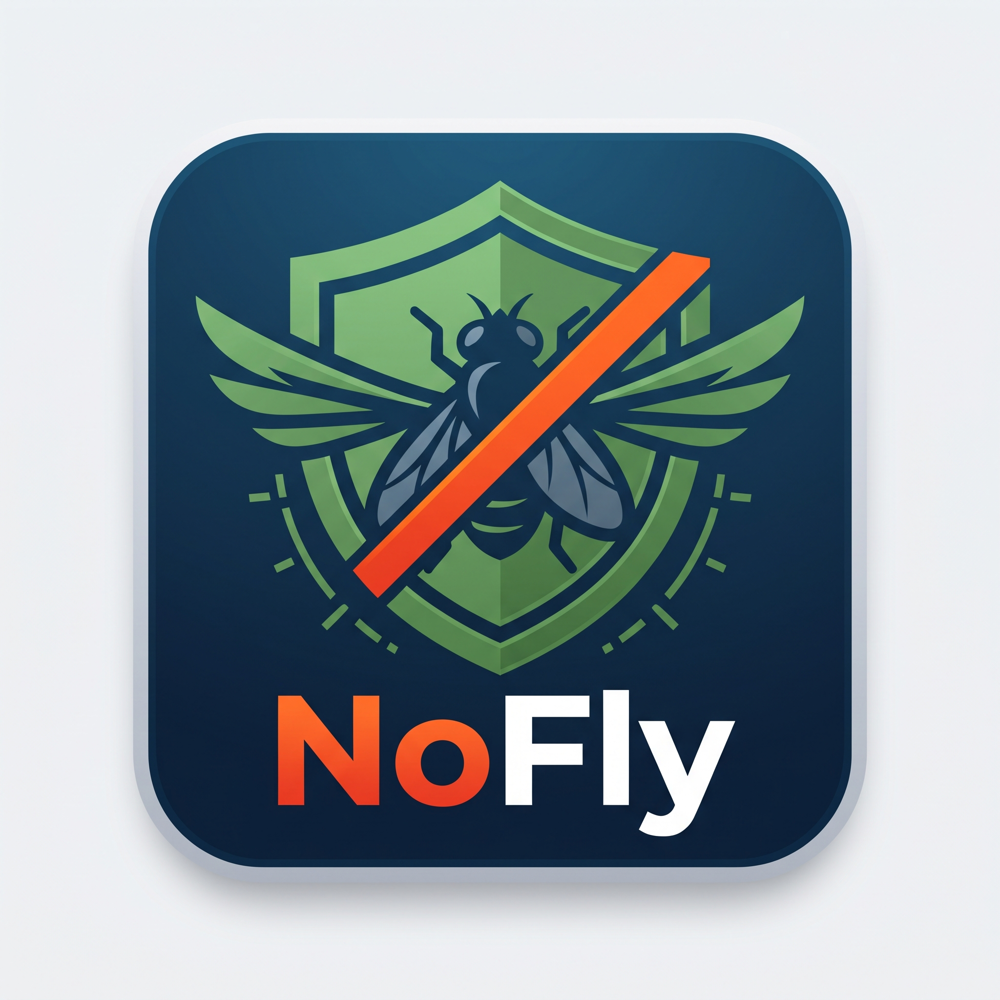

Painéis de tomada de decisão para coordenadores, agrônomos e gestores: acompanhamento da cobertura das 77 sedes, evolução semanal de vistorias, mapas de calor e relatórios executivos em Excel e PDF.
Disponível online na nuvem pelo link oficial:
https://geotecnologiaclealco.github.io/MONITORAMENTO_SEDES/relatorio.html
Material de treinamento e instruções práticas exclusivo para os avaliadores de campo:
Painel técnico avançado para avaliar periodicidade de retorno e áreas de pressão:
Instruções técnicas para administradores do sistema: estrutura de diretórios, rotinas de sincronização com o KoboToolbox, processamento de shapefiles no QGIS e publicação de atualizações no GitHub.
Dando duplo clique no arquivo MENU_MONITORAMENTO.bat, o administrador tem acesso ao menu numérico rápido:
| Opção | Ação | Descrição |
|---|---|---|
| [1] | Abrir Mapa Web | Abre o aplicativo NoFly de campo no navegador local. |
| [2] | Baixar Vistorias do Kobo | Conecta via API na nuvem Kobo, baixa todas as coletas novas e atualiza a planilha Excel consolidada e o JSON. |
| [3] | Atualizar Base do Mapa | Processa os shapefiles Sede.shp e AREAS.shp e regera o dados_mapa.js. |
| [4] | Publicar no GitHub | Executa o Git add/commit/push na nuvem para atualizar o app nos celulares de toda a equipe. |
| [5] | Abrir no QGIS | Inicia o projeto oficial MONITORAMENTO QUEIROZ.qgz com as camadas tematizadas. |
| [6] | Painel Kobo Online | Abre a tabela de submissões na nuvem oficial do KoboToolbox. |
| [7] | Análise e Calor | Abre a ferramenta de comparação semanal e raios de 300m. |
| [8] | Relatório Online | Abre o painel executivo e gera relatórios em Excel/PDF. |
| [9] | Manual do Usuário | Abre este manual interativo completo. |
10_Monitoramento_Sede/
├── logos/ (Logos oficiais NoFly, ícones PWA 192/512)
├── banco de dados geograficos/ (Shapefiles das 77 Sedes, Fazendas e QGIS .qgz)
├── relatorios e formularios/ (Visitas_Monitoramento_Sedes_Kobo.xlsx oficial)
├── scripts/ (Scripts Python de sincronização e bases)
│ ├── baixar_planilha_visitas_kobo.py
│ └── atualizar_base_web.py
├── index.html (Aplicativo NoFly para Campo e Celular)
├── relatorio.html (Relatório Executivo Online com Excel/PDF)
├── analise_frequencia.html (Painel de Frequência e Calor 300m)
├── manual.html (Este Manual Oficial do Usuário & Campo)
├── MENU_MONITORAMENTO.bat (Central de Operações em 1 clique)
└── LEIA-ME_MANUAL_DO_USUARIO.txt (Documentação técnica em texto simples)
Basta clonar o repositório ou copiar a pasta inteira 10_Monitoramento_Sede. Se for executar os scripts Python na nova máquina, instale as dependências via terminal uma única vez:
pip install geopandas requests pandas openpyxl